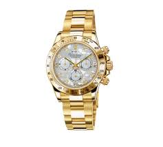
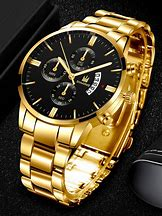
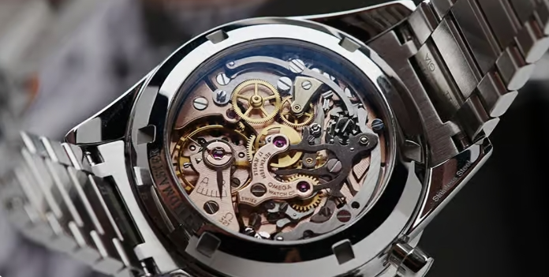
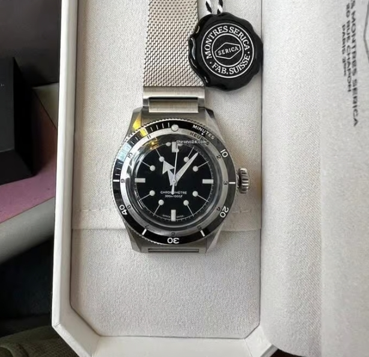
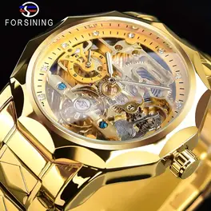

Men’s Luxury Watches

Luxury Chronograph
R499.99In Stock

Classic Leather Timepiece
R499.99In Stock

Stainless Steel Elegance
R599.99In Stock

Rolex
R659.99In Stock

Premium Stainless Steel
R359.99In Stock

Limited edition
R1999.99In Stock

Top class steel
R999.99In Stock

Real Gold
R1999.99In Stock